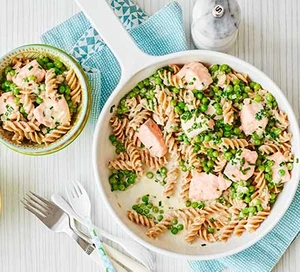

Salmon and Pea Pasta

A healthy, 20 minute dinner for the whole family to enjoy
Ingredients
- 240g wholewheat fusilli (or favorite pasta)
- 1 small cube of butter
- 1 large shallot, finely chopper
- 140g frozen peas
- 2 skinless salmon fillets, cut into chunks
- 140g low fat creme fraiche
- 1/2 low salt vegetable stock cube
- chopped chives to garnish
How to make
- Bring a pan of water to boil temperature
- Cook the pasta according to instructions for it's type
- Heat the butter in a saucepan
- Add the shallots in the saucepan and cook for 5 minutes or until softened
- Add the peas, salmon, creme fraiche and 50ml of water to the saucepan
- Crumble in the cube of stock into the saucepan
- Cook for 3-4 minutes then stir in the chives and some black pepper
- Mix with pasta and serve in bowls